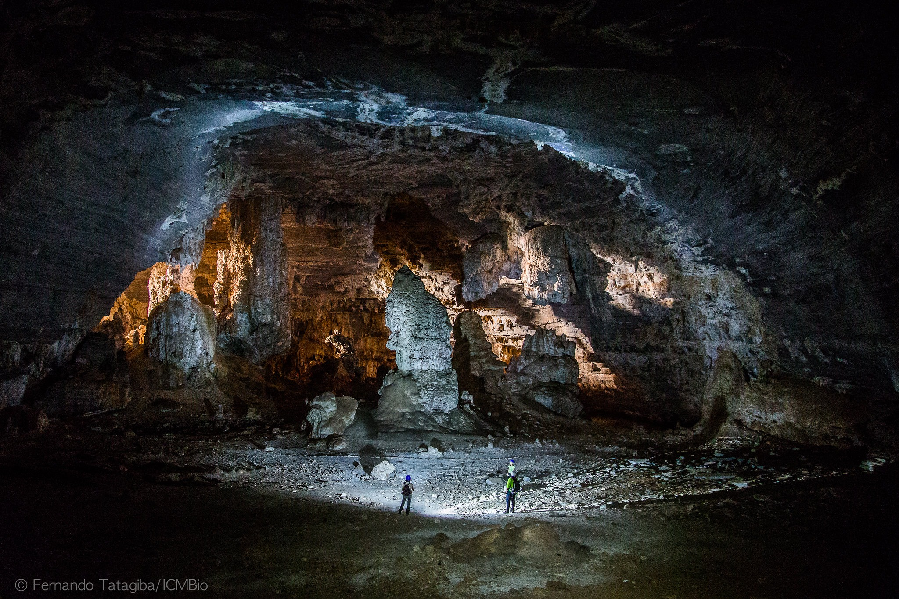

Parque Nacional Cavernas do Peruaçu – Tesouro Natural e Arqueológico de Minas Gerais
Localizado no norte de Minas Gerais, o Parque Nacional Cavernas do Peruaçu é um dos destinos mais impressionantes do Brasil, combinando belezas naturais, formações geológicas grandiosas e um dos mais importantes acervos arqueológicos do país. Com cânions profundos, cavernas monumentais e pinturas rupestres com milhares de anos, o parque é um verdadeiro santuário da pré-história e um paraíso para os amantes do ecoturismo e da aventura.
Um dos grandes destaques do Peruaçu são suas cavernas, entre as mais espetaculares do Brasil. A Gruta do Janelão, a mais famosa do parque, impressiona com seus enormes salões e estalactites gigantes, além de um imenso vão que forma uma "janela" natural para a paisagem. Outras formações notáveis incluem a Gruta Bonita, com suas formações calcárias delicadas, e a Lapa dos Desenhos, onde centenas de pinturas rupestres contam histórias da ocupação humana há mais de 10 mil anos.
Além das cavernas, o parque abriga trilhas incríveis que levam a mirantes deslumbrantes, como o Mirante do Janelão, de onde é possível admirar a grandiosidade da paisagem esculpida ao longo de milênios. A biodiversidade da região também é impressionante, com espécies de fauna e flora típicas do Cerrado e da Caatinga. Durante as caminhadas, não é raro encontrar animais silvestres e se deparar com paisagens intocadas de beleza rara.
Protegido pelo Instituto Chico Mendes de Conservação da Biodiversidade (ICMBio), o Parque Nacional Cavernas do Peruaçu é um destino imperdível para quem deseja conhecer um dos maiores patrimônios naturais e arqueológicos de Minas Gerais. Seja explorando suas cavernas monumentais, contemplando as pinturas rupestres ou se aventurando por suas trilhas, o Peruaçu proporciona uma experiência única e inesquecível em meio à natureza e à história.
